Что это такое
AA Bridge — приложение для Android, которое позволяет запускать на экране Android Auto (в машине) приложения, которые туда официально не попадают: плееры, браузеры, VPN-клиенты и прочее.
Есть два способа это использовать:
1. Сам AA Bridge как список приложений. Иконка AA Bridge появляется на экране машины. Открыв её, вы видите список всех приложений, установленных на телефоне, и можете запустить любое прямо там — на весь экран.
2. Отдельные «обёртки» (wrapper). Для конкретного приложения (например VLC или AdGuard VPN) можно создать отдельную маленькую APK со своей иконкой. Она появляется на главном экране машины рядом с Картами и Музыкой и открывает это приложение сразу, без списка.
Разница наглядно: открыв иконку AA Bridge, вы видите список из всех приложений телефона с поиском и вкладками «Избранные / Недавние / Все». Открыв иконку обёртки, вы попадаете сразу в само приложение — как будто оно установлено в машину нативно.
Никогда не нажимайте «Проверить» — эта кнопка отправляет APK в Google, и после такого анализа Google иногда помечает именно эту версию как вредоносную без возможности обойти предупреждение в дальнейшем.
Установка — шаг за шагом
1. Скачайте APK (кнопка выше) и откройте файл в Загрузках. Появится предупреждение Play Защиты — «Подробнее» → «Установить без проверки».
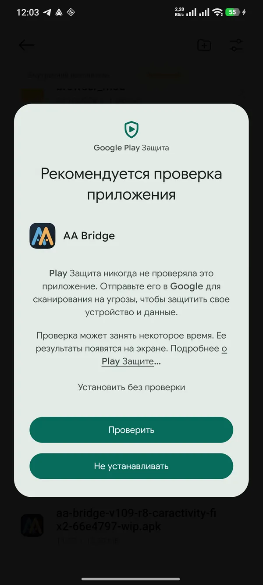
2. Если Android попросит разрешить установку из этого источника — разрешите.
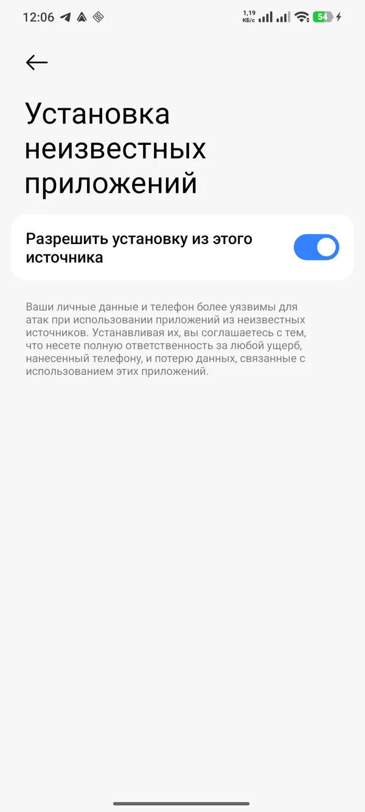
3. Откроется онбординг с чеклистом условий.
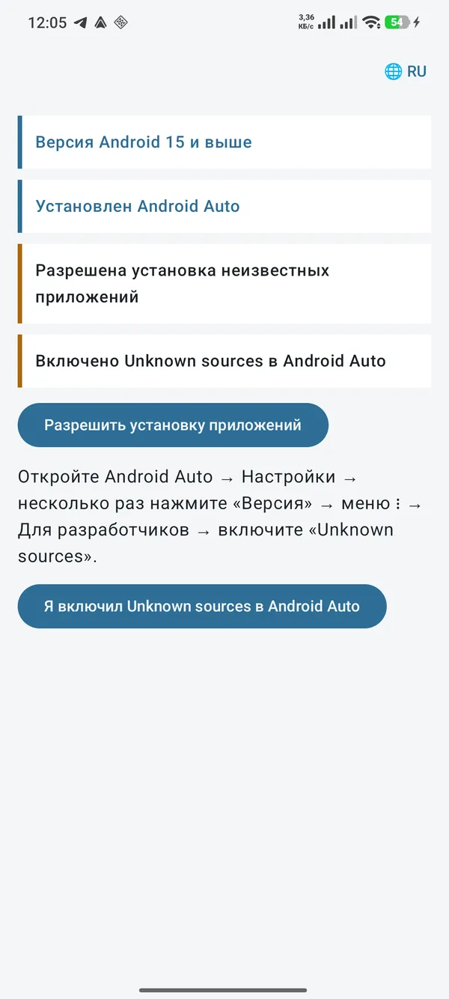
4. Останется пункт «Unknown sources в Android Auto» — включите его отдельно: откройте приложение Android Auto → Настройки → несколько раз нажмите на номер версии → «Для разработчиков» → включите «Неизвестные источники».
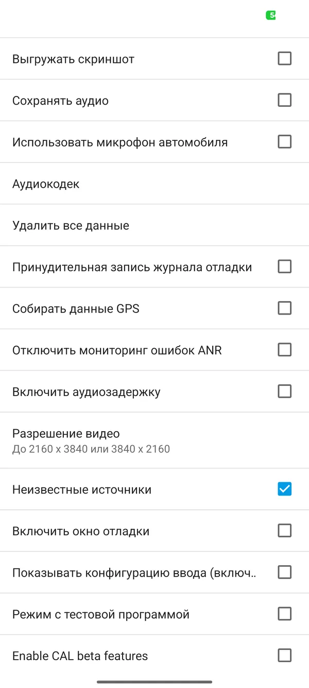
5. Вернитесь в AA Bridge и подтвердите.
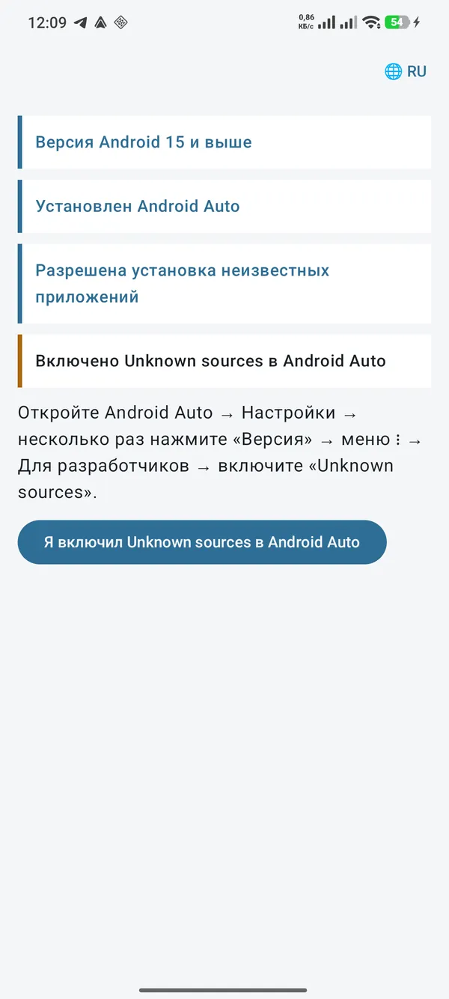
6. Разрешите уведомления — через них придёт код сопряжения.
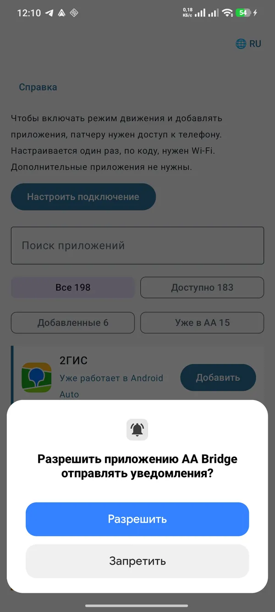
Сопряжение с телефоном (один раз)
Нужен доступ к собственной «Беспроводной отладке» телефона — одноразовая настройка, похожая на подключение Bluetooth-устройства. Нужен Wi-Fi (любая сеть).
7. Появится диалог с инструкцией.
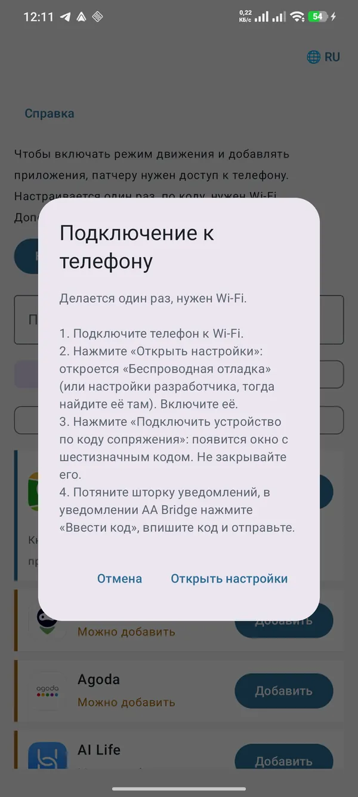
8. «Открыть настройки» → системный экран «Беспроводная отладка» → «Подключить устройство с помощью кода подключения».
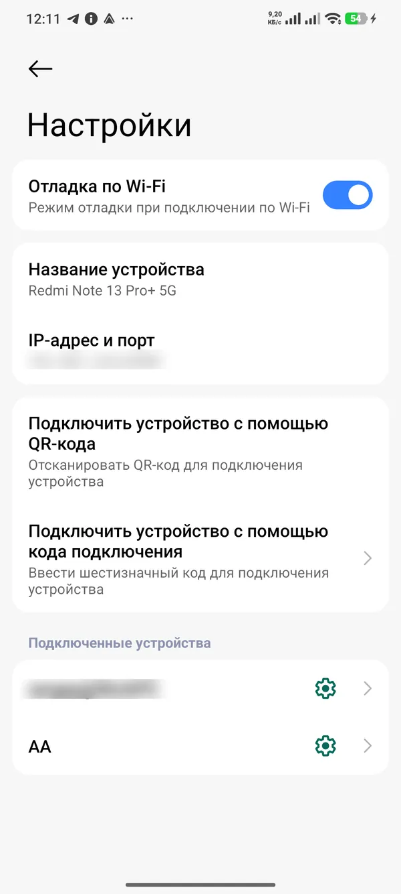
9. Появится 6-значный код.
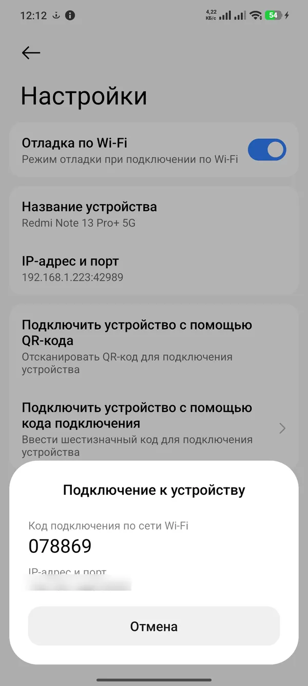
10. В шторке уведомлений найдите «AA Bridge: сопряжение», введите код и нажмите стрелку отправки.
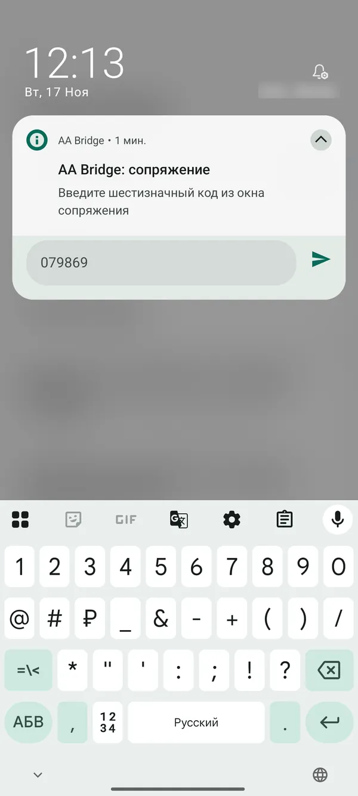
11. Появится диалог «Обновить приложение?» — нажмите «Обновить».
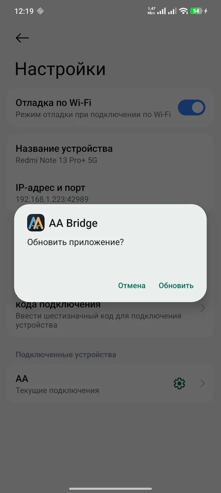
12. Снова предупреждение Play Защиты — опять «Подробнее» → «Установить без проверки» (не «Проверить»).
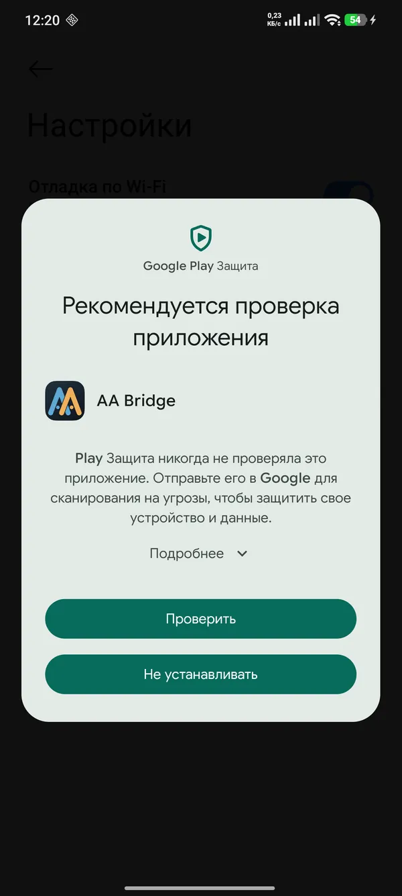
13. Готово — запись об установке исправлена, Android Auto будет видеть приложение правильно.
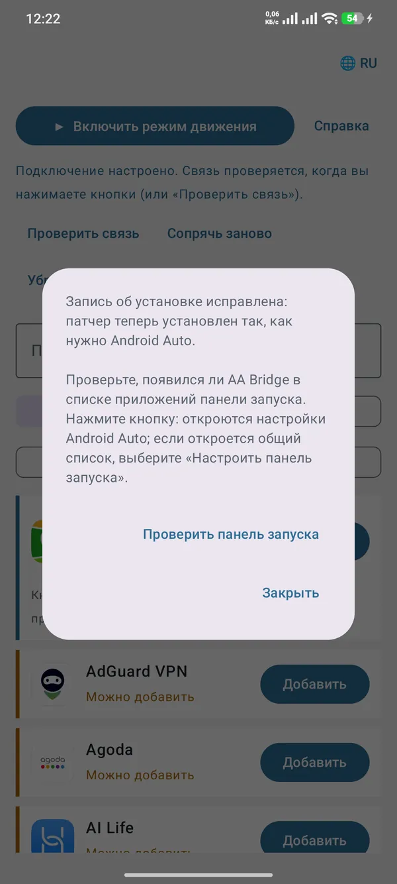
Главный экран
Список всех приложений телефона, поиск, вкладки, кнопка «Добавить» для создания обёртки.
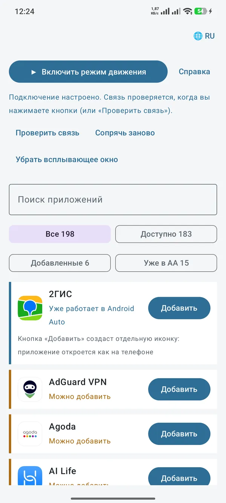
Добавление обёртки
Обёртка нужна только если хочется отдельную иконку на главном экране машины. Чтобы просто запустить приложение, ничего устанавливать не нужно: любое приложение с телефона можно сразу открыть из списка AA Bridge в машине.
14. Нажмите «Добавить» у нужного приложения.
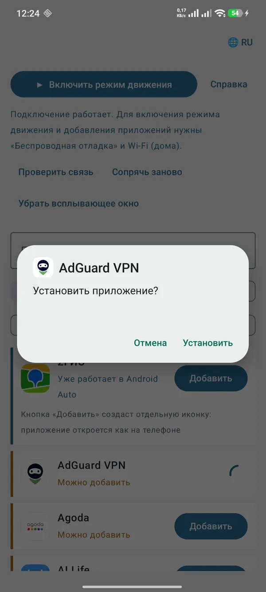
15. Снова Play Защита — «Подробнее» → «Установить без проверки» (не «Проверить»).
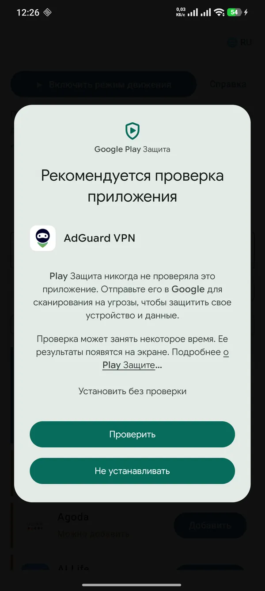
16. Готово.
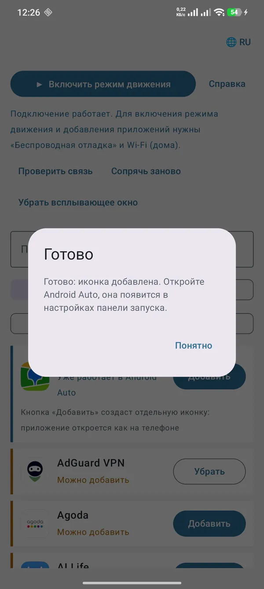
Режим движения
Чтобы приложение работало в машине без постоянного Wi-Fi, включите режим движения один раз дома.
17. «Включить режим движения» → подтвердить.
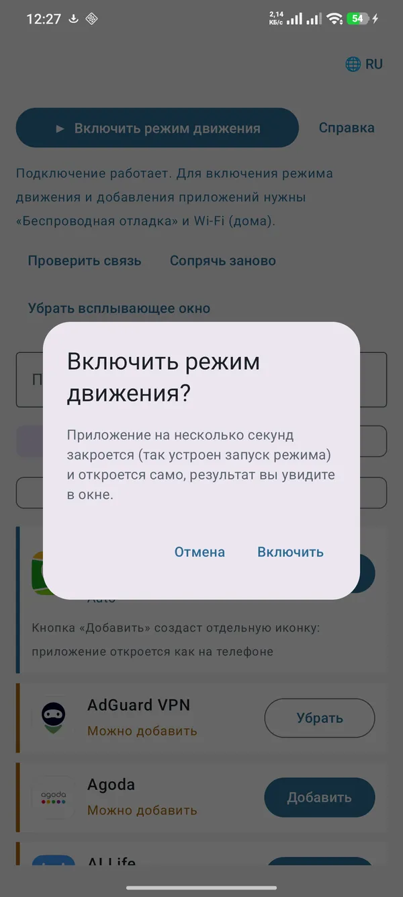
18. Готово — Wi-Fi больше не нужен.
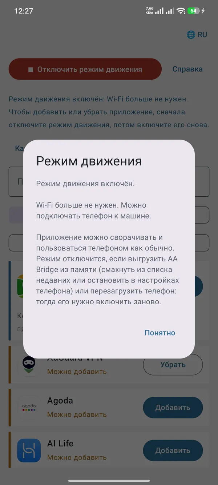
Использование в машине
Подключите телефон к Android Auto как обычно.
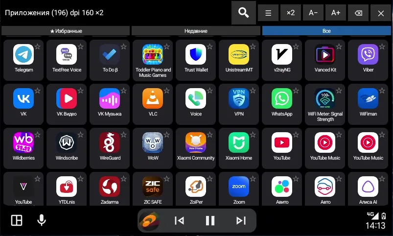
Иконка обёртки открывает приложение сразу, без списка:
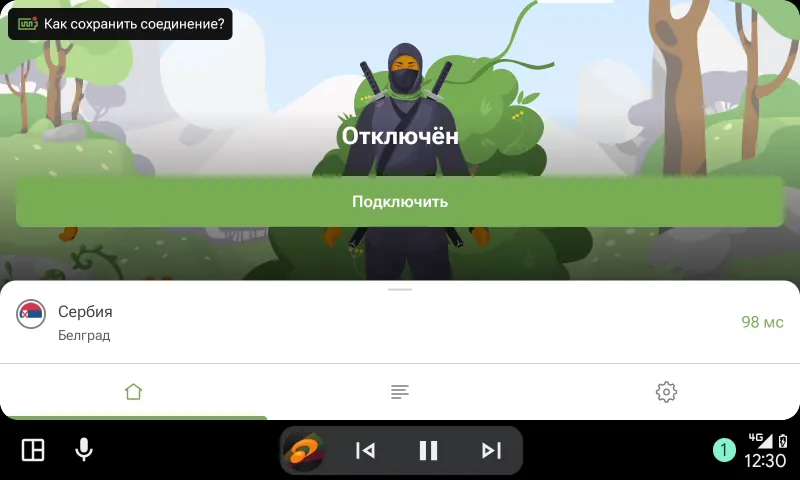
Обе иконки на главном экране машины рядом с обычными приложениями:
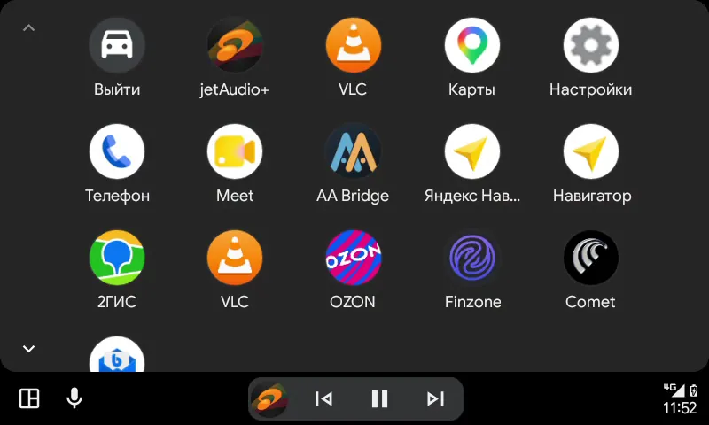
Выход из приложения, запущенного через AA Bridge
Чтобы выйти из приложения, запущенного через AA Bridge (из списка или через обёртку), быстро тапните три раза по самой верхней полоске экрана машины. Откроется скрытое меню с кнопками «Назад» и «Закрыть». Это работает только для приложений, запущенных через AA Bridge; на остальные приложения Android Auto (Карты, Музыка и т. д.) не влияет.
Задать вопрос
Вопросы и проблемы с установкой можно задать в Telegram.
What is this
AA Bridge is an Android app that lets you run apps on the Android Auto screen (in your car) that aren't officially supported there: media players, browsers, VPN clients, and more.
There are two ways to use it:
1. AA Bridge itself as an app list. The AA Bridge icon appears on the car screen. Opening it shows a list of every app installed on your phone — launch any of them full-screen right there.
2. Individual "wrappers". For a specific app (e.g. VLC or AdGuard VPN) a tiny separate APK with its own icon can be generated. It appears on the car's home screen next to Maps and Music and opens that app directly, with no list.
The difference, visually: opening AA Bridge shows a searchable list of every phone app with "Favourites / Recent / All" tabs. Opening a wrapper icon drops you straight into that app, as if it were natively installed in the car.
Never tap "Check" — it uploads the APK to Google, and after such an analysis Google can sometimes mark that exact version as harmful with no way to dismiss the warning afterwards.
Installation — step by step
1. Download the APK (button above) and open it from Downloads. A Play Protect warning appears — "Details" → "Install without scanning".
2. If Android asks to allow installs from this source, allow it.
3. The onboarding screen opens with a checklist.
4. One item remains — "Unknown sources" inside Android Auto itself: open the Android Auto app → Settings → tap the version number several times → "Developer settings" → enable "Unknown sources".
5. Go back to AA Bridge and confirm.
6. Allow notifications — the pairing code arrives through one.
Pairing with your phone (one-time)
The app needs access to the phone's own "Wireless debugging" — a one-time setup similar to pairing a Bluetooth device. You need Wi-Fi (any network).
7. A dialog with instructions appears.
8. "Open settings" → the system "Wireless debugging" screen → "Pair device with pairing code".
9. A 6-digit code appears.
10. In the notification shade, find "AA Bridge: pairing", type the code and tap the send arrow.
11. An "Update app?" dialog appears — tap "Update".
12. Another Play Protect warning — again "Details" → "Install without scanning" (not "Check").
13. Done — the install record is fixed, Android Auto will now recognize the app correctly.
Main screen
A list of every phone app, search, tabs, and an "Add" button to create a wrapper.
Adding a wrapper
A wrapper is only needed if you want a separate icon on the car's home screen. To simply run an app you don't need to install anything: any app on the phone can be opened right away from the AA Bridge list in the car.
14. Tap "Add" next to the app you want.
15. Another Play Protect warning — "Details" → "Install without scanning" (not "Check").
16. Done.
Enabling drive mode
So the app keeps working in the car without a constant Wi-Fi connection, enable "drive mode" once at home.
17. "Enable drive mode" → confirm.
18. Done — Wi-Fi is no longer needed.
Using it in the car
Connect your phone to Android Auto as usual.
A wrapper icon opens that app directly, with no list:
Both kinds of icons sit on the car's home screen next to regular apps:
Exiting an app started through AA Bridge
To exit an app that was started through AA Bridge (from the list or via a wrapper), tap the very top strip of the car screen three times quickly. A hidden menu with "Back" and "Close" buttons opens. This works only for apps started through AA Bridge; it does not affect other Android Auto apps (Maps, Music, etc.).
Ask a question
Questions and installation problems are welcome on Telegram.